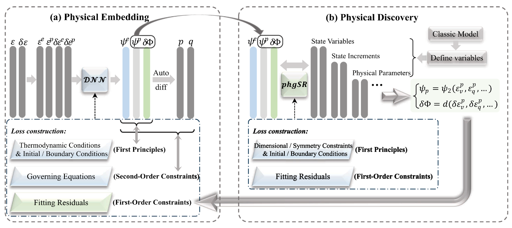

机器学习 · 力学 · 科学发现Machine Learning · Mechanics · Scientific Discovery
朱毅Yi Zhu
Yi Zhu朱毅
北京工业大学建筑工程学院博士研究生
导师：陈苏 教授
Ph.D. Candidate, College of Architecture and Civil Engineering, Beijing University of Technology
Advisor: Prof. Su Chen
我的研究聚焦于从数据中发现可解释、物理一致的动力学规律。早期工作围绕机器学习驱动的岩土本构建模，发展了物理引导符号回归、热力学约束神经建模与神经符号融合方法。近期研究进一步面向非线性动力系统与科学发现，探索如何从受迫系统的高维观测中识别低维动力学，并将其迁移到场地响应，岩土本构等工程问题。 My research focuses on discovering interpretable, physically consistent dynamical laws from data. My earlier work developed physics-guided symbolic regression, thermodynamics-constrained neural modeling, and neural-symbolic approaches for geomaterial constitutive modeling. More recently, I have been studying nonlinear dynamical systems and scientific discovery, with an emphasis on identifying low-dimensional dynamics from high-dimensional observations of forced systems and transferring them to engineering problems such as seismic site response and geotechnical constitutive modeling.
研究主线Research Programs
两条研究主线由同一个问题连接：如何从复杂观测中提取简洁、可解释且受物理约束的规律。点击任一方向可查看方法演进、代表工作与论文。 Both programs address a shared question: how can concise, interpretable, and physically constrained laws be extracted from complex observations? Select a program to explore its methodological progression, representative studies, and publications.

机器学习驱动的岩土本构建模Machine Learning for Geotechnical Constitutive Modeling
从符号本构发现出发，融合热力学约束、神经网络与符号回归，建立可解释、可外推的显式本构模型。 Discovering explicit constitutive laws by combining symbolic regression, thermodynamic constraints, and neural representations for interpretability and extrapolation.
查看研究与论文Explore research & papers
非线性动力系统建模与科学发现Nonlinear Dynamical Systems & Scientific Discovery
通过 FLARE 与 FLARE-T，从高维响应中识别受迫低维动力学，并连接数值模拟、稀疏观测与场地响应预测。 Using FLARE and FLARE-T to identify forced low-dimensional dynamics from high-dimensional responses and connect simulations, sparse observations, and site-response prediction.
查看研究与论文Explore research & papers从响应数据到可解释动力学From response data to interpretable dynamics
我目前主要关注非线性动力学、系统动力学与科学发现，尤其是受迫系统中潜在状态、演化方程与外部输入之间的可解释关系，以及这些关系在复杂工程系统中的迁移与验证。 My current work centers on nonlinear dynamics, dynamical systems, and scientific discovery—particularly interpretable relationships among latent states, evolution equations, and external forcing, together with their transfer and validation in complex engineering systems.